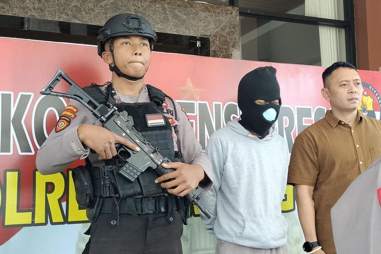

Bullying
Menurut psychology today bullying atau penindasan adalah pola berulang kali dan dengan sengaja menyakiti dan mempermalukan orang lain, khususnya mereka yang lebih kecil, lebih lemah, lebih muda, lebih rendah.
Penindasan dapat melibatkan serangan verbal (menyebut nama dan mengolok-olok orang lain) serta serangan fisik, ancaman bahaya, bentuk intimidasi lainnya, dan pengucilan yang disengaja dari aktivitas. Studi menunjukkan bahwa intimidasi memuncak sekitar usia 11 hingga 13 tahun dan menurun seiring bertambahnya usia anak-anak. Agresi fisik yang terang-terangan seperti menendang, memukul, dan mendorong paling sering terjadi pada anak-anak yang lebih kecil; agresi relasional—merusak atau memanipulasi hubungan orang lain, seperti menyebarkan desas-desus, dan pengucilan sosial—lebih sering terjadi saat anak-anak dewasa.
Sebagian besar intimidasi terjadi di dalam dan di sekitar sekolah dan di taman bermain, meskipun internet cocok untuk bentuk intimidasi yang sangat menyusahkan. Sekitar 20 persen siswa melaporkan diintimidasi di sekolah, menurut Pusat Statistik Pendidikan Nasional. Anak laki-laki dan perempuan sama-sama cenderung diintimidasi.
Kenapa Orang Membully?
Orang menggertak karena itu bisa menjadi cara yang efektif untuk mendapatkan apa yang mereka inginkan, setidaknya dalam jangka pendek, dan karena mereka tidak memiliki keterampilan sosial untuk melakukannya tanpa merugikan orang lain. Penindasan juga merupakan cara membangun dominasi sosial.
jika agresi normal anak usia 2 tahun tidak ditangani dengan konsisten, anak-anak gagal memperoleh pengendalian internal terhadap perilaku tersebut. Penindasan tetap menjadi gaya perilaku yang bertahan lama, terutama karena penindas mendapatkan apa yang mereka inginkan—setidaknya pada awalnya.
Sasaran Pembully
Penelitian menunjukkan bahwa mereka yang diintimidasi kurang memiliki ketegasan bahkan dalam situasi yang tidak mengancam dan memancarkan rasa takut jauh sebelum mereka bertemu dengan pelaku intimidasi. Ini adalah anak-anak yang tidak membela diri mereka sendiri.
Bagaimana pelaku intimidasi memutuskan siapa yang akan dipilih?
Hingga sekitar usia 7 tahun, pengganggu mengganggu hampir semua orang. Setelah itu, mereka memilih anak-anak untuk dimangsa. terlibat dalam "proses pemilihan mangsa" untuk menentukan anak lain mana yang akan menjadi korban penurut yang sesuai . Penindas menyukai korban yang tampak kesal saat diganggu dan yang tidak memiliki teman atau sekutu. Peneliti menemukan bahwa mereka yang dipilih sebagai korban menunjukkan ketidakamanan dan ketakutan.
Bahaya Bullying
Bullying menyebabkan banyak kesengsaraan bagi orang lain, dan efeknya pada korban dapat berlangsung selama beberapa dekade, bahkan mungkin seumur hidup. Rasa sakit akibat intimidasi mungkin dirasakan paling parah sekitar masa remaja , suatu tahap perkembangan di mana kepekaan terhadap penolakan sangat meningkat. Pengorbanan adalah sumber umum penghindaran sekolah, mengarah pada perasaan malu dan tidak berharga, dan dapat menyebabkan depresi dan kecemasan kronis
Penindasan membawa pesan implisit bahwa agresi dan kekerasan adalah solusi yang dapat diterima untuk masalah ketika sebenarnya tidak. Kerja sama dan penyelesaian perbedaan secara damai mendukung dunia yang semakin terhubung. Bullying tidak hanya merugikan korbannya tetapi juga merugikan pelakunya sendiri. Sebagian besar pelaku intimidasi memiliki jalan memutar ke bawah sepanjang hidup, karena perilaku agresif mereka mengganggu pembelajaran, memegang pekerjaan, dan membangun serta memelihara hubungan intim.
Studi terhadap anak-anak menunjukkan bahwa korban dengan mudah menyetujui permintaan pengganggu, menyerahkan sepeda, mainan, dan mainan lainnya. Mereka menangis dan bersikap defensif; tampilan rasa sakit dan penderitaan mereka yang sangat terlihat memberi penghargaan kepada pelaku intimidasi dan berfungsi sebagai sinyal penting dari dominasi pelaku intimidasi. Anak-anak yang menjadi korban tidak memberikan pencegah terhadap agresi, yang dapat membuat mereka tidak disukai bahkan oleh teman sebayanya yang bukan pelaku intimidasi.
Pencegahan Bullying
Pertahanan terbaik melawan intimidasi adalah keterampilan sosial—mengajar semua keterampilan sosial anak dan membiarkan mereka mengembangkan kepercayaan pada kemampuan mereka sendiri. Sebagai insinyur sosial untuk anak-anak kecil, orang tua sangat penting dalam membentengi anak-anak mereka: Mereka dapat secara teratur menanyakan tentang tantangan sosial yang dihadapi anak-anak mereka dan kemungkinan solusi permainan peran. Pertahanan terbaik kedua melawan intimidasi adalah pergi dan tidak melawan.
Anak-anak sangat malu diintimidasi dan mungkin tidak memberi tahu siapa pun ketika mereka menjadi korban. Oleh karena itu orang tua memiliki kewajiban untuk mengetahui sesuatu tentang kompetensi umum anak-anak mereka dengan teman sebaya dan bagaimana teman sebaya memperlakukan mereka—dengan bertanya kepada guru selama konferensi sekolah dan dengan lembut bertanya kepada anak-anak mereka tentang kehidupan sosial mereka. Mengajari anak untuk melawan tidaklah efektif; membantu mereka memperoleh keterampilan sosial.
Contoh Kasus Bullying
Berikut contoh kasus bullying di indonesia yang viral
Korban kelas 7 Membakar Sekolah dengan Bom menyerupai Molotov di SMP SMPN 7 Pringsurat, Temanggung, Jawa Tengah

Korban yang berusia 13 tahun ini selama sekolah merasa sakit hati dan berakibat pada psikologisnya karena teman dan gurunya melakukan intimidasi/menyudutkan kepadanya sehingga korban membakar sekolahnya dengan bom menyerupai molotov di ruang prakarya.
tugas dan karya yang sudah korban kerjakan kurang mendapat apresiasi dari guru terbukti dengan ucapan kepala sekolah yang menyebutnya sebagai seorang "caper" ini menunjukkan guru yang tidak aware terhadap kondisi psikologis anak muridnya,
pengawalan terhadap korban bullying oleh polisi pun tampak berlebihan, dengan didampingi oleh seorang polisi bersenjata. ini bukti bahwa kesadaran bullying di lingkungan masyarakat masihlah rendah dan selalu victing blaming kepada korban.
Sebagai gurupun mengajarkan kepada muridnya untuk bisa toleransi terhadap sesama dan tidak menunjukkan intimidasi/kekerasan terhadap murid lainnya. Perlu kerjasama semua pihak untuk memiliki kesadaran tnetang bullying.
Referensi
- https://www.psychologytoday.com/us/basics/bullying
- https://www.kompas.com/tren/read/2023/07/02/140000065/-bullying-picu-siswa-smp-di-temanggung-bakar-sekolah-jadi-tersangka-disebut